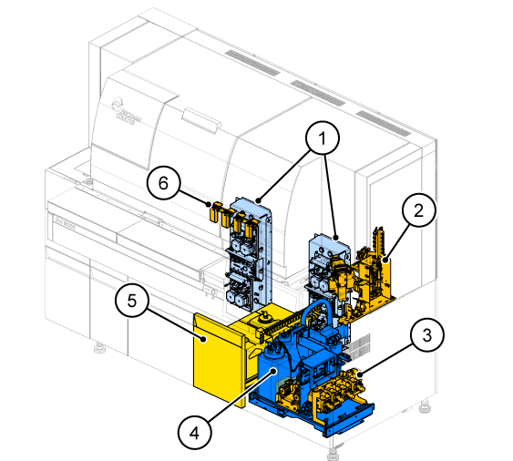
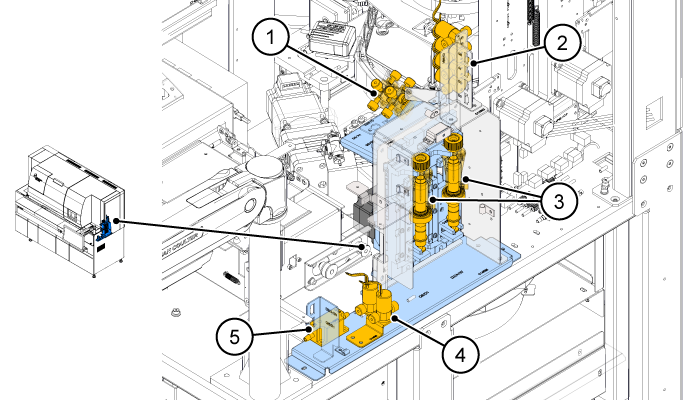
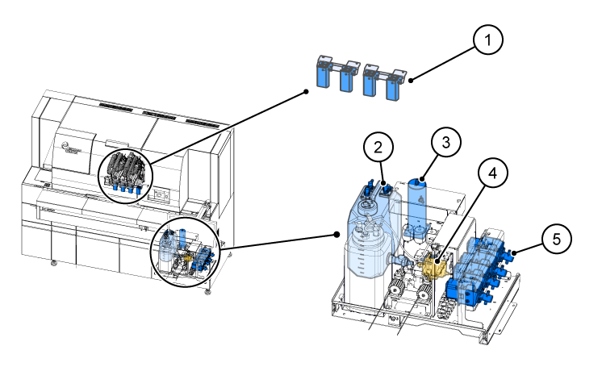
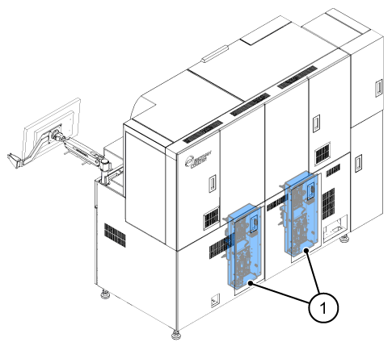
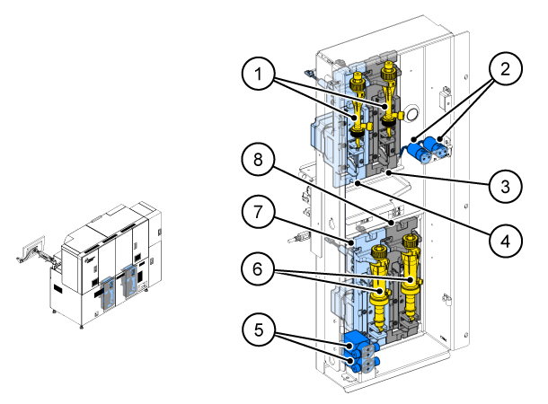
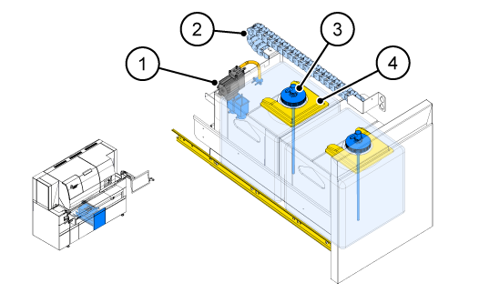

Operating Principles for the Fluidics System
This topic includes information about the theory of operation, or operating principles, for the instrument's fluidics system.
| Table of Contents |
|---|
| Function |
| Location |
| Operational Overview |
| Component Locations and Functions |
| Component and Interaction Block Diagram |
| Interacting and Intersecting Devices |
Function
The instrument fluidics system supplies various components with wash buffer and substrate, and removes liquid waste. Each individual component of the system serves different functions.
| Component | Function |
|---|---|
| Wash Buffer Supply Cubitainer | When the level drops below a defined amount, supplies the intermediate wash buffer supply tank with wash buffer. |
| Reagent Pump and Pipetting | Aspirates and dispenses reagents and wash buffer into reaction vessels (RV's) as part of the reaction build process. |
| Probe Washing/Wash Tower | Washes reagent probes before and after aspiration and dispense of sample and reagents. |
| Assay Wash Dispensing | During the wash process, dispenses wash buffer into RVs in the wash wheel. Also washes the A1W aspirate probe during the washing process. |
| Substrate Pump Dispensing | Dispenses substrate into RVs prior to mixing and incubation. |
| Vacuum/Flow | Collects liquid waste from the reagent probe wash and A1W wash processes and drains into the intermediate waste container. |
| Liquid Waste | Transports liquid waste from the intermediate waste container to the external waste drain or on-board waste containers. |
Location
Fluidics system components are located in various areas of the instrument. See the following illustration for details.

| 1 | Reagent pump and pipetting, probe washing / wash tower |
| 2 | Assay wash dispensing |
| 3 | Vacuum / flow, probe washing / wash tower |
| 4 | Liquid waste |
| 5 | Wash buffer supply cubitainer |
| 6 | Probe washing / wash tower |
Operational Overview
This subtopic includes information about fluidics system components and their operations.
| Wash Buffer Operation |
|---|
|
| Liquid Waste Operation |
|---|
|
Component Locations and Functions
The fluidics system includes the following components.

| 1 | Pressure Sensors for QS/D1/A2 and D2/A1W/A3 |
| 2 | Dispense Valves for A2, A3, QS, A1W, D1, and D2 |
| 3 | "Low Resolution" Syringes for QS/D1/A2 and D2/A1W/A3 |
| 4 | Supply Valves for QS/D1/A2 and D2/A1W/A3 |
| 5 | PF04 Manifold (to Supply Valves) |

| 1 | Wash Towers |
| 2 | Intermediate Wash Buffer Tank |
| 3 | Bubble Trap |
| 4 | Circulation Pump |
| 5 | Hi-Cera Pumps |

| 1 | Reagent Syringe |

| 1 | "High Resolution" Reagent Syringes |
| 2 | Reagent Probe Valves |
| 3 | "High Resolution" R1/3 Reagent Syringe Pump Dispenser |
| 4 | "High Resolution" R2/4 Reagent Syringe Pump Dispenser |
| 5 | Reagent Supply Valves |
| 6 | "Low Resolution" Reagent Syringes |
| 7 | "Low Resolution" RL2/4 Reagent Syringe Pump Dispenser |
| 8 | "Low Resolution" RL1/3 Reagent Syringe Pump Dispenser |

| 1 | Substrate Valves |
| 2 | Substrate Loader Pump/Syringe Assembly |

| 1 | Wash Buffer Supply Pump |
| 2 | Wash Buffer Drawer E-Chain |
| 3 | Wash Buffer Container Supply Cap |
| 4 | Wash Buffer Container Shim |
Component and Interaction Block Diagram
For a detailed illustration of components and interactions, see the DxI9000 Fluidics Block Diagram .
Interacting and Intersecting Devices
The fluidics system interacts with the following devices:
- Reagent Pipettors
- Wash Wheel
- Solid Waste
- Waste Drain (External)